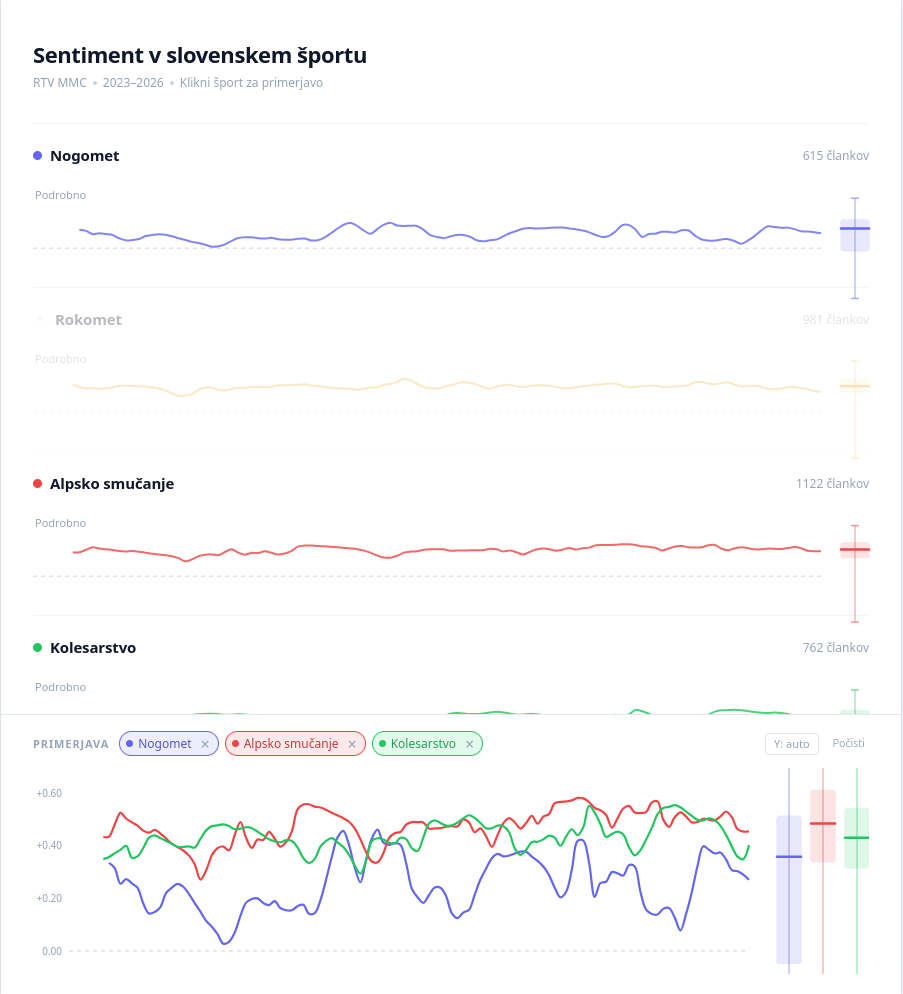
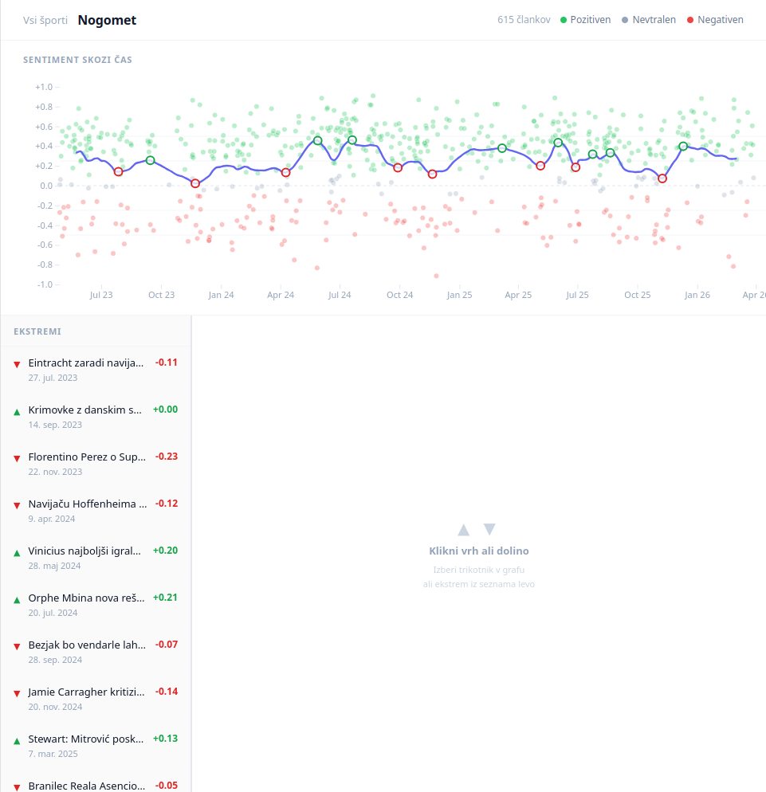
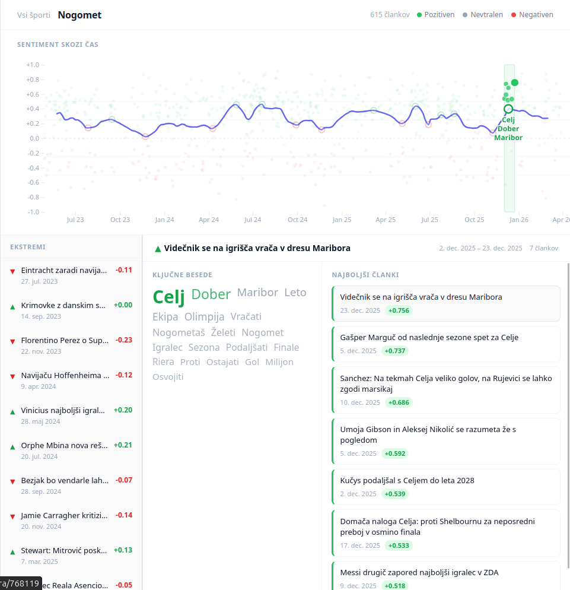

📸 index.htmlKrivulja + seznam ekstremov

Kliknjen ekstrem — word cloud + članki

Korak 1: Embedding-based klasifikacija
paraphrase-multilingual-MiniLM-L12-v2Korak 2: Self-training (iterativno)
| Model | Pozitivni | Nevtralni | Negativni | κ |
|---|---|---|---|---|
lxyuan/distilbert-base-multilingual |
80% | ~0% | 20% | 0.130 |
cardiffnlp/twitter-xlm-roberta-base |
26% | 69% | 5% | 0.143 |
cardiffnlp/xlm-roberta-base-sentiment-multilingual ✓ |
43% | 52% | 6% | 0.305 |
sentiment_rawZaznava ekstremov
scipy.signal.find_peaks s prominence pragom 8%Ključne besede
lemmagen3 (slovenščina)Problem z navadnim TF-IDF
Rešitev: dvostopenjski TF-IDF
Obdelava besedila
lemmagen3 (SL) — iger → igra, tekmovalcev → tekmovalecNormalizacija uteži za vizualizacijo
Sentiment model (κ = 0.305)
Opažena asimetrija
✗ lxyuan/distilbert-multilingual
✗ Stara validacija twitter-xlm (n=30)
✗ Utežena regresija odstavkov
✗ Self-training brez pseudo-labelov
✗ LOWESS s fiksno frakcijo (frac=0.08)
✗ TF-IDF brez background IDF
✗ Zaznava ekstremov z argrelextrema
find_peaks s prominence pragom 8%, vrh le če nad povprečjem✗ Sentiment samo na leadu (512 znakov)